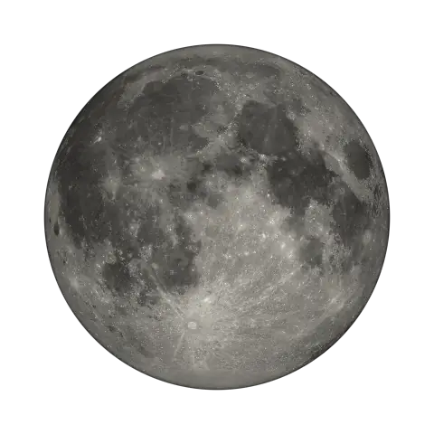

Projet open source · Python & Astropy
La phase de la Lune, pour n'importe quelle date.
Nom de la phase, illumination, angle de phase et âge de la Lune — calculés à partir des positions réelles du Soleil et de la Lune.

Cycle de 29,53 jours
Glissez dans tous les sens pour faire tourner la Lune
- Illumination
- —
- Angle de phase
- — 0° = pleine lune
- Âge de la Lune
- — sur 29,53 jours
Les huit phases d'un cycle
Le nom de la phase est déduit de l'âge de la Lune, en jours depuis la dernière nouvelle lune.
Fonctionnalités
Une vraie application, pas un simple script.
-
N'importe quelle date
Passé, présent ou futur : choisissez une date dans le calendrier et obtenez la phase en un clic.
-
Quatre mesures
Nom de la phase, pourcentage d'illumination, angle de phase et âge de la Lune en jours.
-
Visualisation
Une image de la Lune correspondant à la phase, avec un affichage texte de secours.
-
Interface PySide6
Sélecteur de date, bouton « Aujourd'hui », panneau d'informations et barre d'état.
-
Raccourcis clavier
T pour aujourd'hui, Entrée pour calculer, Échap pour quitter.
-
Version console
Un menu en ligne de commande pour un usage rapide, sans interface graphique.
Comment ça marche
De vraies positions astronomiques.
Les positions du Soleil et de la Lune sont obtenues avec Astropy. Les résultats ont été comparés à des références indépendantes : TimeAndDate, MoonCalc et StarDate. Les noms de phase concordent ; les petits écarts d'illumination s'expliquent par les éphémérides et les heures de référence.
Illumination = (1 + cos φ) / 2 × 100
φ = 180° − élongation Soleil–Lune
-
Positions
Astropy fournit les positions géocentriques du Soleil et de la Lune à la date choisie.
-
Angle de phase
On mesure la séparation angulaire Soleil–Lune vue depuis la Terre (élongation).
-
Illumination
On en déduit le pourcentage du disque lunaire éclairé visible depuis la Terre.
-
Nom de la phase
L'âge de la Lune (0 à 29,5 jours) détermine le nom : nouvelle lune, premier quartier, pleine lune…
Installer
Prêt en deux commandes.
Python 3 requis. Lancez l'interface graphique, ou la version console pour un usage léger.
Raccourcis clavier
- T Aujourd'hui
- Entrée Calculer
- Échap Quitter
# 1. Dépendances
pip install astropy numpy pillow matplotlib PySide6
# 2. Interface graphique
python moon_phase_gui.py
# ou version console
python moon_phase_calculator.py